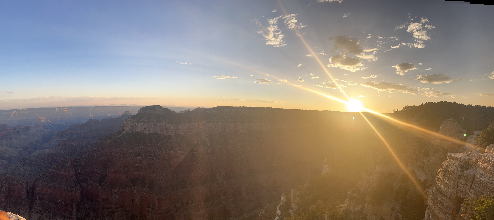
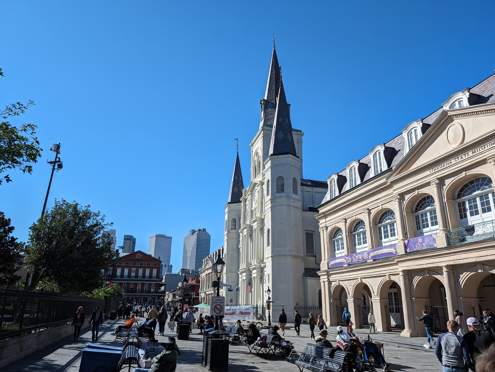

2023 was a year where I was absolutely unproductive with writing blog posts. I had a hard time feeling like I had anything useful or educational to say in a with the rapid adoption of ChatGPT. However, ChatGPT can’t talk about how my life has gone, so at the very least, I can continue these blog posts!
The Good of 2023
More Travel Goals Met
I was able to travel quite a bit this year, including going to the following areas:
- Wisconsin
- National Parks near Las Vegas and Maine
- New Orleans
To start off, here are the national parks I managed to visit. There was a few in July, including the Grand Canyon:

Bryce Canyon National Park:

and Zion National Park:
Additionally, I was able to hit Acadia in September:
Besides national parks, I was also was able to go to New Orleans in December:

Overall, I’ve knocked off even more places that were on my travel bucket list in 2023, and I’m looking forward to visiting some more places in 2024.
Finding Peace in Doing Things Alone
In June, I was lucky enough to be able to take a solo trip for a work conference. This was the first time I had ever traveled across states without knowing a single person at the location I went to (I’ve traveled alone in airplanes, but usually friends/family awaited me at the airport).
Getting a rental car and exploring an unfamiliar area solo was nerve-wracking, especially as there were a few anxiety-inducing situations that happened on the trip (getting attacked by birds, a deer almost running into me, and learning I get claustrophobic in caves). However, I’m glad I took advantage of the opportunity my workplace gave me and did the trip.

I tried to take that approach into other areas of my life, including solo hiking and attending local events by myself throughout the year. These were easier to do solo than a trip to another state, and I’m slowly getting better at putting myself out there at events where I don’t know another soul in attendance. I still don’t like it, but I am building confidence in the fact that I can indeed do it.
A More Optimal Financial Setup
This isn’t a particularly “fun” topic, but I took another look at my financial setup and finally opened up a high-yield savings account to take advantage of high interest rates. This isn’t exactly a life-altering change, but it has resulted in me making more in interest on my liquid savings, and every little bit helps as I consider my future financial goals.
The Bad of 2023
Loneliness is Relentless
Unfortunately I had a family member pass early in January from cancer, which really didn’t set a good tone for how 2023 was going to go. This led to some infighting amongst my extended family, which is never any fun to deal with.
Ultimately, the above was a wake-up call to a bitter truth that I needed to swallow. I grieved and accepted I won’t have the family relationships that I wish I did. I’m not like the rest of my family; for example, most of them were lucky to graduate high school, yet I obtained a Master’s degree. I recognize overall it’s not a bad thing to be different in this situation, but I won’t lie, it’s easy to feel envious of others who do have those relationships in their life.
I also didn’t make any progress in building more meaningful relationships (romantic, platonic, or otherwise) in 2023. (This feels embarrassing to type out, as this has been a goal of mine for years now.) I know it wasn’t for a lack of effort, as I focused on local in-person events and Meetup groups for 2023. Unfortunately, they simply didn’t pan out as I hoped.
I’m trying to approach this disappointment with radical acceptance, telling myself that “it is what it is” and that my self-worth is not defined by the quality and/or quantity of relationships I have currently in my life. I’m also trying to cut myself some slack; most people would struggle with loneliness if they had to spend effectively two years completely isolated due to COVID, WFH, and living in a new location.
Health Stressors
In the early months of 2023, I dealt with muscle twitching across my entire body. For a while I thought this was due to handling stress poorly, but I eventually was able to remedy the issue by upping my calcium intake (pro-tip for anyone who runs into this issue!), but when it happened near constantly for months on end prior, I was incredibly stressed out.
Conclusion
2023 was ultimately an uneven year. I don’t have a lot of faith in 2024 being much better on a macro level, especially with it being an election year in the US. Regardless, I’ll focus on what I can do to make this upcoming year a more memorable and meaningful one.